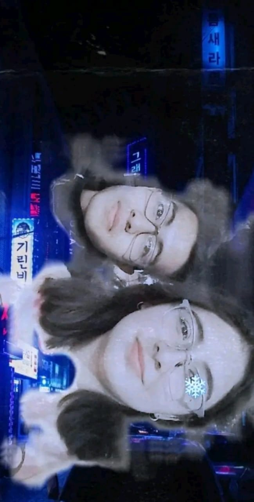

LOVE MYSELF: THE MOST BEAUTIFUL MOMENT IN LIFE PT1
Carta 8: Un sueño en vida
Dedicado a Ximena
Octubre del 2021, los primeros días que me junte con Diana fueron a raíz de tareas pero después poco a poco íbamos conociéndonos mejor. De hecho saliendo de la Prepa me comencé a ir con ella a acompañarla a su casa, recuerdo que el primer día que salimos de la Prepa juntos, no hablamos en todo el camino jajaja. Aún tengo eso hecho presente en mi mente y más adelante le pedí disculpas por ese mal rato jajaja. En ese tiempo no me sabía comunicar bien con personas que no conocía.
Pero lo que me alegro es que poco a poco fuimos hablando más, recuerdo que cada que pasaba una hora, los maestros nos dejaban salir a tomar 10 minutos de descanso y en esos pequeños ratos nos la pasábamos platicando. La verdad para serte sincero, me agrado mucho la sinergia que teníamos en ese tiempo.
Poco a poco sin darme cuenta, íbamos construyendo un gran lazo de amistad entre ella y yo, era la primera vez que experimentaba un sentimiento como este, el sentir la calidez, la amabilidad y el apoyo de una persona. Era algo que no sabía que necesitaba.
Un Lunes por curiosidad decidi ir a clases en la semana que no me tocaba, porque quería conocer a la otra mitad de mi grupo, conocer caras nuevas y ver quien estaba ahí, llegando al salón todos se me quedaron viendo, como diciendo ¿Y este quién es?, a lado de donde me senté estaba una niña de cabello ondulado que llevaba una mochila café, esa niña se llama Andrea y lo más curioso, fue que yo no le hable a ella, ella me hablo a mi jajaja. Cuando conocí a Andrea se me hizo una niña muy extrovertida, cuando me hablo, ella era la que llevaba las riendas de la conversación, era la primera vez que conocía a una chica así.
Para finales del 2021, la Preparatoria nos organizó una bienvenida con temática navideña, recuerda que como actividad tenía que hacer un baile navideño con mi grupo o algo así, el punto es que recuerdo que cuando nos tocaba ensayar, nos separaban entre hombres y mujeres, a mí eso no me gustaba ya que con la única que hablaba era con Diana y a ninguno de los niños les había hablado.
Llegamos a tal punto que nos mandábamos mensaje diario, incluso hasta compartíamos que comíamos hasta con foto y así jajaja, había veces en las que ella faltaba y yo me sentía muy solo cuando no iba. Había veces en la que le decía si se sentía cómoda conmigo, en ese tiempo tenía una autoestima muy baja, así que me autopercibía como alguten aburrido. Pero ella me daba palabras de aliento, diciéndome que no importaba de que hablaramos, que solo quería hablar conmigo y que todo lo que decía era importante y no sabes como eso impacto en mi corazón.
Recuerdo que el día de nuestra presentación del baile navideño, nos llevaron al auditorio de la Prepa a darnos nuestra bienvenida, realizamos varias dinámicas, hubo música y muchas cosas las cuales disfrute, cuando nos sentamos juntos en los asientos, yo a cada rato volteaba a ver a Diana y veía esa alegría en ella que yo no me permitía expresar en esos momentos, ya que mi corazón aún estaba muy herido y no me permitía expresar emociones. Luego de eso fuimos a nuestro convivio que realizaron en el salón de clases, no recuerdo bien que hicimos, pero lo que si se es que me la pase muy bien ese día. Lastimosamente ese día me tuve que ir rápido corriendo ya que me marcaron diciéndome que le habia pasado un accidente a mi abuelita.
Para cuando salimos de vacaciones en Diciembre, sentí unas ganas muy grandes de volver a ver a Diana, tal parecía que estaba muy apegado a ella a tal punto de que el 21 de ese mes le dije por mensaje que me gustaba.
En la Psicología, la dependencia suele surgir para los que no conocen que es el amor. Lastimosamente en ese momento de mi vida confundí la validación y el sentirse querido con el amor. Afortunadamente me cruce con alguien que tiene valores éticos muy buenos y que me rechazo con una calma y elegancia donde no busco herir con su respuesta, sinceramente te puedo decir que fue el rechazo más bonito que he tenido jajaja.
La verdad en ese tiempo mi mente aún seguía inestable, no hablaba con nadie de lo que me pasaba, solo con Diana y eso me llenaba el corazón. Aun así, agradezco que me regalara su amistad, actualmente es algo que valoro mucho más.
Antes de que terminara el año, salimos por primera vez ella y yo. No recuerdo bien que hicimos pero si recuerdo algo de esa primera salida y es lo que me dijo luego de que yo te platicara sobre mis sueños: "Espero que todas tus metas y sueños se cumplan, luches por lo que más te gusta y seas feliz". Luego de eso nos tomamos una fotografía para el recuerdo.

Año 2022, cuando regresamos a clases todo seguía de maravilla entre ella y yo, platicábamos todos los días sobre cualquier cosa.
En febrero del 2022, fuimos por primera vez de excursión. La Prepa había organizado una excursión a un campus del Politécnico pero no recuerdo bien cual. Recuerdo que Diana y yo nos habíamos organizado para sentarnos juntos y todo, pero justo ese día el perro orientador que tenía nos fue subiendo al autobús por número de lista, yo siempre he sido el primero de la lista y Diana era de las ultimas. Me acuerdo que como fui el primero en entrar al autobús me fui a sentar hasta atrás creyendo de que nos iban a sentar por número de lista, pero después de que fueron entrando uno por uno sentándose donde sea solo tenía que esperar a que entraras Diana, pero justo cuando ella entro y yo había levantado mi mano para que me viera, otro niño que estaba más enfrente que yo le dijo que se sentara con él y ya no vio mi mano. Luego de eso llego un chico preguntándome si estaba esperando a alguien, yo le dije que no y se sentó conmigo.
Durante la mitad del viaje solo me limite a ver las películas que había descargado en mi teléfono para verlas con Diana, pero de pronto el chico cambio lugar con Andrea sentándose a mi lado. Andrea me comenzó a hacer la plática, la verdad no recuerdo bien de qué hablamos pero recuerdo que me la pase bien en esa segunda mitad del viaje.
Cuando llegamos al IPN entramos a una Expo de licenciaturas, recuerdo que me encontré a Diana ya adentro de esa Expo y que recorrimos todos los stands que ofrecían información sobre las carreras universitarias. Recuerdo que en ese entonces Diana me dijo que quería estudiar una ingeniería y que me pregunto que quería estudiar yo, una pregunta que no supe responder en ese momento,
Luego de eso nos llevaron a un parque, en el cual llegando luego luego Andrea tomo mi mano y nos salimos rápido del autobús, fuimos a comer a una pizzería y luego fuimos a una plaza cercana, la verdad es que si me divertí mucho con las ocurrencias que luego se aventaba y su risa contagiosa. De regreso de la excursión, seguimos platicando Andrea y yo hasta que me quede dormido. Cuando desperté ella ya estaba recargada en mi hombro bien dormidota y ya estábamos a punto de llegar a la Prepa. La verdad fue un día que no salió como planee pero que me divertí mucho y que pude conocer más a Andrea.
Marzo del 2022, en este mes sucedieron muchas cosas pero de las más destacadas están:
- Un día le hable a una niña que se llama Paloma porque llevaba una funda de un Anime que conocía, luego de eso si hablamos pero poco.
- Un día llega a conmigo para invitarme a su fiesta de cumpleaños y como Diana estabas a lado de mi también te dijo a ella jajaja. Su invitación hacia mí me sorprendió ya que no había hablado mucho con ella pero por dentro tenía una sensación que no lograba disernir que era, hoy puedo decirte que esa sensación que sentía era felicidad pero en esos momentos no lo identificaba.
Total que como Diana iba a ir le dije que sí, cuando llego el día y fuimos a la fiesta, sentí una sensación que no te pudiera describir, ya que hace mucho tiempo que alguien no me invitaba a su fiesta de cumpleaños. Cuando entre a casa de Paloma y conocí a su mama y a su familia, se sentía una sensación de calidez y amabilidad en el ambiente que incluso fácilmente me podría sácar las lágrimas, quien iba a decir que esa misma sensación la iba a sentir contigo en el futuro Xime. Luego de un rato llego una chica de la cual no le preste tanta atención ese día, pero que en el futuro se convertiría en mi amor platónico de la Prepa, pero de ella hablaremos mas adelante. El punto es de que ese día igual me la pase genial.
En ese mismo mes de Marzo Diana había dejado de ir a clases por una semana porque se enfermo o algo así paso. El punto es de que ella no iba, por lo que al principio me la pasaba solito pero de pronto comenzó a hablar más con Paloma y con Andrea. Incluso un día que ya me iba a mi casa pensando que el día había terminado, me habla por teléfono Paloma para preguntarme donde estaba y que si me quería ir con ellas en la salida. En ese momento se me salió una lágrima del ojo y le dije con mucho entusiasmo que iba para allá. Desde ese día supe que se estaba formando algo grande aquí.
Cuando Diana regreso a clases yo ya me hablaba bien con Paloma y con Andrea, ya solo faltabas ella en unirse, así que poco a poco se fue construyendo una de las mejores amistades de cuatro personas que tuve en la Prepa, ya para principios de Abril ya éramos muy amigos los cuatro.
No sabes cómo disfrute estas fechas con ellas, me alegro de que la vida las pusiera en mi camino. Luego de eso disfrute mucho los siguientes meses con experiencias que me enriquecían como persona. Para Julio de ese año recuerdo que los cuatro nos despedimos con un abrazo agradeciendo el tiempo compartido y pidiendo de que segundo de Prepa fuera igual de bueno o mejor.
Esta carta para mí es muy especial ya que relato como fue que conocí a estas personas que me ayudarían a no hundirme y me impulsarían a seguir avanzando. Desde que tengo memoria, la mayoría de mujeres que tengo presentes en mi vida me han demostrado que son personas increíbles, desde mi Madre, mi Abuelita hasta mis queridas amigas que estimo demasiado. Yo considero que son muy importantes para el desarrollo de este mundo, no es que un sexo se imponga sobre el otro si no que haya una coexistencia en donde ambas partes aporten. No sabes cómo me duele ver en las noticias mujeres desaparecidas que no pueden identificar, me parte el alma. Es por eso que pido de todo corazón que todas ustedes tengan vidas largas, encuentren el significado del amor y sean felices.
Gracias por ser parte de mi historia y seguir leyéndome Xime, tqm.
Dany.